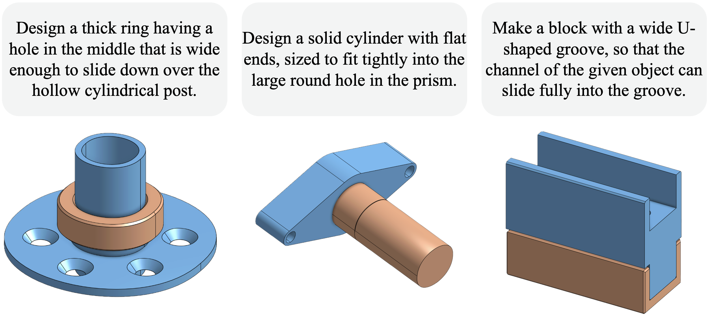
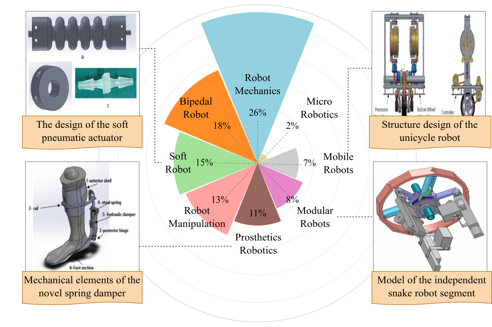
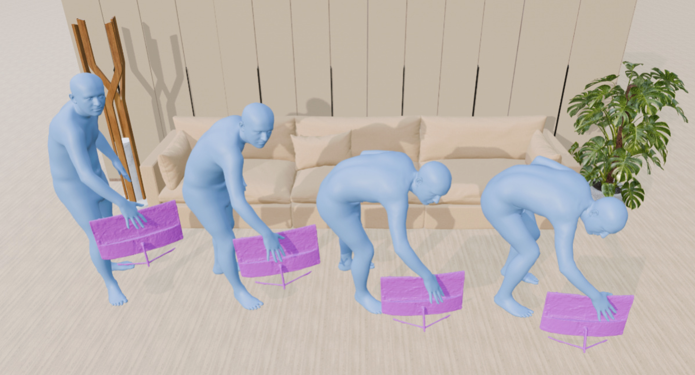
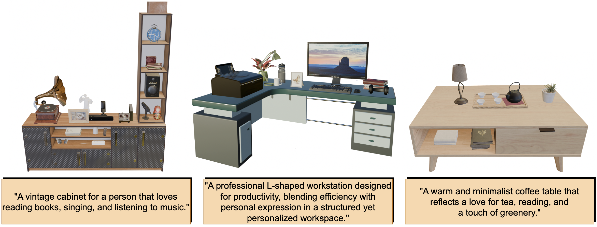
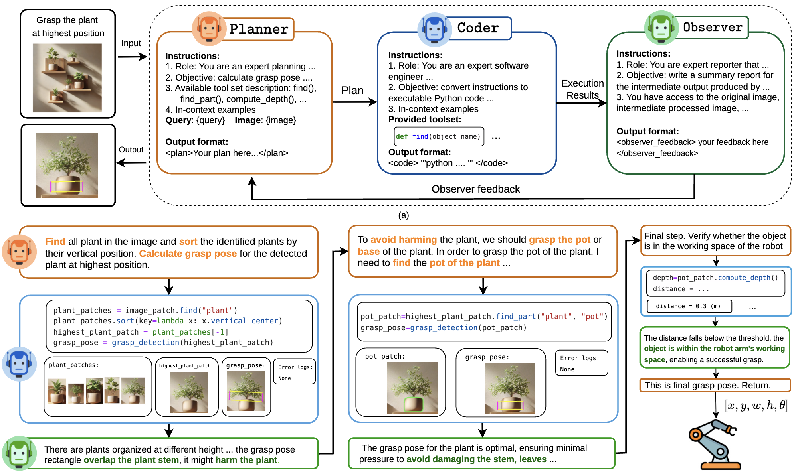
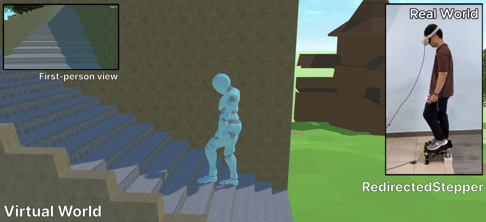

CADKnitter: Compositional CAD Generation from Text and Geometry Guidance
Under Review 2026
AI Research Resident @ FPT AI Center
Hi 👋, I'm Tri Le, from Vietnam🇻🇳. I'm keen on researching. My research interests are in the field of AI and machine learning. Previously, I also worked on Human-Computer Interaction during my Bachelor's degree.
trislee002 (at) gmail (dot) com

Under Review 2026


SIGGRAPH Asia 2025

Technical Report 2025

